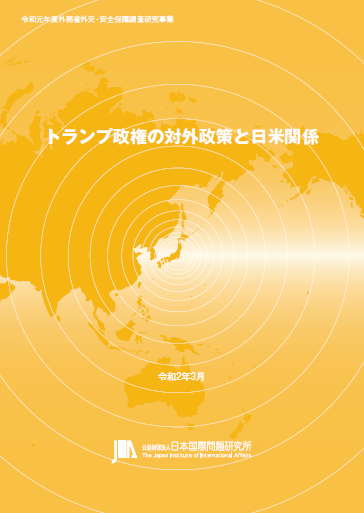

收录于合集 #美国研究 24个

作品简介
【作者】 中山俊宏，庆应义塾大学综合政策学部教授，日本国际问题研究所上席客员研究员，防卫省参与，主要研究领域为美国政治外交和美国政治思想。
【编译】 徐一凡（国政学人编译员，立命馆大学国际关系学院）
【审校】 卫艺璇
【排版】 张湘苹
【美编 】游钜家
【来源】 中山俊宏「2020年米国大統領選挙の外交的含意」（日本国際問題研究所「トランプ政権の対外政策と日米関係」報告書、令和元年度外務省外交・安全保障調査研究事業、2020年）。
期刊简介

《特朗普政府的对外政策与日美关系》报告书是日本国际问题研究所在2017-2019年度外务省外交·安全保障调查研究事业“‘自由开放的国际秩序’的强韧性 – 美国、中国、欧洲的形势及其影响”的一部分，亦是同研究所“特朗普政府的对外政策和日美关系”项目组第三年研究成果的总结。日本国际问题研究所是日本国际问题研究类的顶级智库，与日本外务省关系密切。
2020年美国总统选举的外交含义
2020年米国大統領選挙の外交的含意
中山俊宏
推荐语
在2020年美国大选基本尘埃落定之时，回过头来看一看数月前的某些“先见之明”或许能帮助我们给头脑发热的马后炮式总结降降温，帮助我们摆脱短视与偏见。作者以宏大的视野将2020年总统大选置于冷战后美国和世界遭遇的三次危机的背景之下，或可对美国今后的对外关系提供有益的见解。
导读
本文认为，冷战后美国主要经历了三次危机：9·11恐怖袭击，2008年全球金融危机，以及新型冠状病毒危机，而2020年美国总统选举正是在第三次危机之中进行的。世界正在变得紧密相连，而新冠危机则可能起到了相反的作用。“新冠后”的世界将会处于分岔路口，一边是继续回归“前新冠”的自由主义全球化，另一边则是向“主权主义”转向。2020年美国总统大选正是在上述背景下进行的，特朗普代表的是主权主义，而拜登则是传递出了重建“自由国际秩序（Liberal International Order）”的信号。尽管对外政策不是总统大选中的决定性因素，但2020年的大选无疑会对美国与外部世界的关系造成重大影响。
01
总统选举和冷战后的三次危机
回顾冷战后初期的国际政治，美国中心的单极格局似乎是无需置疑的。当时的美国并不需要应对任何“实际存在的威胁”，经济也随着“IT泡沫”蒸蒸日上，可谓是“无忧无虑的时代”。在2000年的总统大选中，选民似乎更看重候选人小布什和戈尔的“人品”而非政策，也很好的印证了这一点。
首先打破这种和谐的2001年的9·11恐怖袭击。这是美国冷战后遭遇的首个危机。美国认识到，虽然冷战的结束意味着森林中徘徊的“熊（苏联）”的威胁消失了，但脚下的“蛇蝎（非国家暴力主体）”却在蠢蠢欲动。9·11恐袭及其造成的连锁反应使得世界政治的单极格局受到了动摇。
第二次危机是在小布什第二任期最后一年，即2008年全球金融危机。这很可能是美国式“投机资本主义（speculative capitalism）”造成的问题。当时，中国很清楚地认识到了世界金融危机就是美国衰退的征兆。以美中合作为主轴（美中G2论彼时甚嚣尘上），中国也对美国伸出了援手。这次危机也对2008年的总统大选有很大的影响。相较于麦凯恩的“猛猪突进”型政策，奥巴马的“沉着应对”似乎更受欢迎。事实上，在奥巴马上台后初期也确实为应对危机而四处奔走。
第三次危机即2020年的新型冠状病毒危机。此次危机虽然和前两次危机有所不同，但却都是因为世界更加紧密相连而派生出的危机。但是新冠危机仍在进行之中，其严重程度仍难以预测，因为其对人的流动、经济和安全造成的影响都是难以预料的。因此，新冠危机很可能比前两次危机造成的影响都要深远。
新冠危机可能会造成世界逆全球化潮流而动。“新冠后”的世界正处于分岔路口之中，一边通往前新冠时代的全球化，另一边则是向“主权主义”的转向。2020年美国总统大选正是在如此背景下进行的。一方面，特朗普代表着主权主义；另一方面，拜登则传递出了重建自由国际秩序的信号。当然，从9·11恐袭和全球金融危机的视点来看，现在再谈“单极格局”可能有点过时了，但美国对国际社会有压倒性的影响的这一基本认识却并没有动摇。也有人认为，新冠危机会是美中霸权竞争的分水岭。无论如何，新冠危机以及美国对其应对将会对世界政治产生深远影响。
02
对美不安
目前，国际政治正在数个层面上发生结构性变动，其中之一就是大国竞争的回归，即在主权衰退（=全球化）潮流中来自主权国家的反击。大国竞争除了在传统领域，也在网络安全、外层空间安全等新领域展开。但另一方面，主权主义与世界正面临的诸如气候变化和大流疫等后现代问题并不相容。气候变化和大流疫等问题需要世界向与主权主义相反的方向努力，但世界似乎并没有向这一方向前进。也即，全球化进程中主权主义的复活反而阻碍了人类解决上述后现代问题。这使得国际协调与合作变得难上加难，即便是在新冠危机这样史无前例的威胁面前，主权主义也没有能被很好的抑制。在这一大背景下来看，“对美不安”即“对美国退却（retrenchment）之不安”。
“对美不安”并非是现在才开始的。对国际社会来说，美国发挥的作用越大，就必然越会导致“美国如果抛弃一直以来承担的责任的话怎么办”一类的不安。近年来，对于美国“退却”的讨论甚嚣尘上，而美国在内政外交方面的种种趋势也加剧了这一“对美不安”，正如《外交事务》（Foreign Affairs）2020年3、4月特刊“Come Home, America”所表现的那样。在特朗普当政时期，国际社会有这样的不安是很自然的。拜登认为只要回到特朗普以前（=奥巴马政府）的时代就能解决问题了。可是，“对美不安”在特朗普以前就已经存在了。更让人忧虑的是，尽管外在表现不同，但奥巴马政府和特朗普政府都体现着美国退却的某种连续性。
03
不安的源泉
奥巴马政府和特朗普政府都有让国际社会感到不安的因素。
“对奥巴马的不安”主要有以下几点。首先是奥巴马政府初期的美中G2论，开罗演说，对无核世界的主张，及其对以对话解决问题的期待。其次，奥巴马也多次表现出想要放弃美国的“优势地位（primacy）”，G2论就是如此。此外，奥巴马还认为随着气候变化等全球议题的优先级上升，美国优势并不能解决上述问题。最后，或许也是最重要的一点，奥巴马在拒绝介入叙利亚局势上的决绝态度。
“对特朗普的不安”，一言以蔽之，即是特朗普的“新主权主义”。特朗普政府追求激进的“美国第一主义”，只注重对外政策的短期收益。他企图放弃美国在“自由国际秩序”中的角色，将同盟视为“负担”而非“承诺”。
从这一视角来看，奥巴马和特朗普的对外政策在五个方面有相似性或连续性。第一，两届政府都明确表示“不介入无意义的纷争”。“不介入无意义的纷争”似乎是理所应当的，但却会传递出退却的信号。奥巴马为了修正小布什政府的“过度介入”政策，将“不做傻事（Don’t do stupid shit）”视为其外交原则，本来无可厚非，但却被认为是“退却”的表现。特朗普一贯批判介入主义，在党内初选时就和其他对外强硬派候选人形成鲜明对比。就任后也多次批判各种“永无休止的战争（endless war）”，否定“威尔逊式的冲动”，将不介入主义作为自己的外交原则。
第二，两届政府都要求盟友承担更多责任。特朗普对盟友的轻视与刻薄广为人知，要求北约盟国将国防开支增加的2%以上，并要求盟友向美国缴纳驻军费用。在奥巴马时代，国防部长盖茨对北约盟友也多持有批判态度，而奥巴马本人也将那些不承担责任但享受美国提供的安全的国家成为“搭便车者（free rider）”。
第三，奥巴马和特朗普都展现出了对外交安全政策精英的不信任。奥巴马对于任何提议介入纷争的提案都有条件反射式的不信任。他认为虽然美国手中有强力的“大锤”，但却不能把所有问题都视为“钉子”。外交安全政策精英关于介入的建议都是基于“美国优势”的，但这与奥马巴的外交原则并不契合。特朗普对于精英的不信任也是周知的事实了。特朗普式的民粹主义强烈批判所谓“深层政府（deep state）”，尤其是其中的外交安全建制派。他与前任国防部长马蒂斯与前任国务卿蒂勒森的不和就是力证。
第四，与第三点相关，奥巴马和特朗普都追求“非常规对外政策”。奥巴马政府对中国政策的摸索，以及之后与古巴和伊朗的交涉都体现了这一点。另外，他的“无核化世界”提案和对叙利亚的不介入也可以视为一种“非常规对外政策”。特朗普政府就更是如此了。特朗普几乎反对一切外交安全建制派的政策，比如TPP、巴黎协定和伊核协定等；反而是那些建制派强烈反对的事才是特朗普想要做的，比如与朝鲜及其领导人的对话。
第五，相较于对外政策，两届政府都更加关心“从内部建设国家（nation-building at home）”。对于奥巴马政府来说，从中东和其他事务中脱身，就可以专心处理诸如“奥巴马医保”等国内议题了，而这才是奥巴马政府的执政重心，也是其最重要的政治遗产。特朗普也有类似的议程，他非常关注国内的身份政治议题，代表性举措即是在美墨边境建造一堵边境墙。对两届政府来说，国内议题才是重中之重。
04
孤立主义的回归？
美国在19世纪信奉的孤立主义对今天而言没有任何现实性。19世纪的孤立主义是当时的美国以当时的国力和世界政治形势为准而摸索出的道路，和今天的情况大不相同。今天的美国尽管陷入了种种困难之中，但其军事和经济实力依然是最一流的。问题在于，美国现在不知道如何运用其实力，并陷入了为何美国要承担特殊责任的纠结之中。这两者的结合就产生了一种违和感。作者认为，美国的困惑源于在冷战后实现了“美国优势”以来，第一次出现了有力的挑战者。新冠危机可能会加速国际政治的结构性变动，但对美中霸权竞争会有如何的影响却并不能确定。如果美国在疫苗开发的竞争中输给中国，可能会造成“第二次斯普特尼克震惊”。但无论美国如何应对国际政治的结构性变动和美中争霸，孤立主义都不是一个可行的选项（即便是特朗普的“美国第一”也不可能彻底回到孤立主义），因为今天的美国已经不可能从世界政治中完全脱离出来。
05
结论
除了在战时，对外政策都不是总统选举的决定性因素。但正如特朗普所述，现在的美国（和世界）都在某种程度上处于字面意思的战争状态。可以想象，民众在此等危急时刻必然会对总统的决断有着高于一般的期待。由此，2020年美国总统大选有着战时总统选举一般的气氛也就不奇怪了。
冷战后的三次危机都削弱了美国的相对实力。9·11恐袭让美国认识到了单极格局不可能永远维持下去，而世界金融危机则进一步动摇了美国的优势地位。现在，新冠危机又把美国带到了“新主权主义”和“古老美好的自由主义（good old liberalism）”的分岔路之上。毋庸置疑，本次大选的结果势必会对今后美国与世界的关系产生长久而深刻的影响。
译者评述
美国作为（依然的）世界头号强国，其对外政策和全球战略无疑会对世界政治的走向产生影响。译者认为，本文在帮助读者从三个方面理解美国对外政策及其对世界政治的影响。
第一，作者将2020年美国的对外关系置于冷战后的宏观框架下理解。作者指出，2001年的9·11恐袭、2008年的全球金融危机、以及2020年新冠危机是后冷战时代美国和世界面临的三次大危机。国际政治的结构性变迁视角来看，这三次危机揭示了冷战后国际政治的两个结构性变化趋势。其一，冷战后世界面临的主要问题是地球规模的“后现代”问题（如气候变化、大流疫等）。这里，所谓“现代”指的是威斯特伐利亚和约以来以（地理边界划定的）主权国家为主的国际体系。而这些地球规模议题的“后现代性”则体现在其固有的“无边界性（borderlessness）”，或曰“跨国性（transnationality）”。其二，最深受这三次危机之害的国家恰恰是头号强国美国，因此美国的相对实力被削弱，美国优势和单极结构也随之动摇。地球规模后现代问题的凸显和美国优势的衰落实际上有其内在联系。前者的崛起本来就使得美国优势没有1990年代那样明显，即从世界其他国家处于美国主导之下（美国中心）向美国和各国一道处于地球规模后现代议题之中（去美国中心）转变，更不用说美国本身就处于相对衰落之中了。
第二，作者指出了，2020年美国总统大选的特殊性在于其实在危机之中进行的。2001年的9·11恐袭发生在2001年，是2000年总统选举一年后。2008年的全球金融危机虽然发生在大选之前，但由于美国政治的“钟摆效应”以及奥巴马的超高人气，很难说2008年总统大选结果反映了美国民众对危机的反应。2020年总统大选则不同，新冠疫情无疑是两党候选人的头号政策议题，为外界观察美国民意对新冠危机的应对提供了一个绝佳的窗口。此外，特朗普与拜登对待新冠疫情的截然不同的态度从某种意义上进一步厘清了美国政治的种种是非，将两种（或多种）政治势力的博弈清楚的展现在我们面前。一言以蔽之，特朗普代表的是“美国第一”的民粹主义，而拜登代表的则是前特朗普时代的自由国际主义。就解决新冠危机等后现代地球规模问题而言，这两者相比似乎还是自由国际主义更好一些。以后见之明来看，最终拜登的胜选和自由国际主义的“中兴”似乎也可以视为一种美国政治和国际体系的自我修复。
第三，作者不但指出了特朗普和之前的奥巴马以及即将到来的拜登的不同之处，也尖锐地指出了奥巴马政府与特朗普政府对外政策在某个位相的连续之处。这个位相就是美国全球“退却”，或曰“收缩”的大背景。基于此，作者指出了从奥巴马政府到特朗普政府地五个连续性。这并不是说两届政府的外交政策有多么相似，而是说尽管两届政府的对外政策原则大相径庭，但却同时受制于美国相对衰落的大背景。如此，我们就能更好地摒弃二元对立的“非黑即白”的观点，从而更加辩证地看带美国政治和对外政策。
文章观点不代表本平台观点，本平台评译分享的文章均出于专业学习之用, 不以任何盈利为目的，内容主要呈现对原文的介绍，原文内容请通过各高校购买的数据库自行下载。
添加 “国小政”微信
获取最新资讯


国政学人
支持学术公益与知识传播
微信扫一扫赞赏作者 __赞赏
已喜欢，对作者说句悄悄话
取消 __
发送给作者
发送
最多40字，当前共字
上一页 1/3 下一页
长按二维码向我转账
支持学术公益与知识传播
受苹果公司新规定影响，微信 iOS 版的赞赏功能被关闭，可通过二维码转账支持公众号。